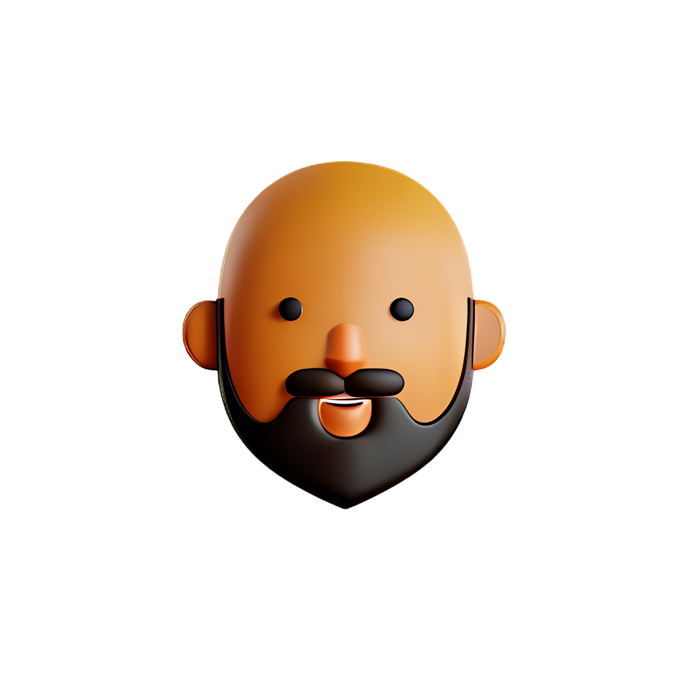
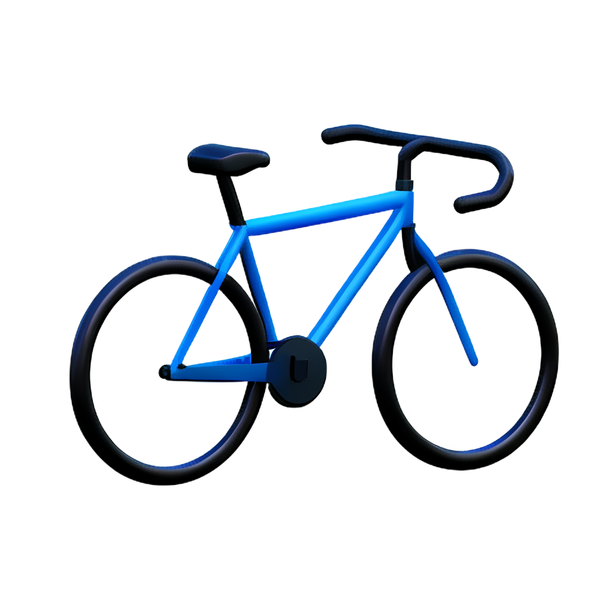

Who am I?
I enjoy a good coffee
Nothing like a warm coffee to get started with my day
I am the bald bearded guy
I have no hair on my head but a beard helps

I have a cat
She is a black cat called Sunday who zooms a lot
I love Halloween
The spooky season is my favourite
I like Zombies
Who doesn't enjoy a good Zombie film/game?
I like to do Triathlons
I run, swim and cycle (cycling is my favourite)

What is my professional experience?
Senior DevOps Engineer
Spotlight Sports Group
January 2025 - Present · 1 year
Remote, United Kingdom
- Led AWS cost optimisation projects across multiple accounts, reducing monthly spend by over $5,000 through automated cleanup tooling, resource auditing and decommissioning of unused services.
- Built and deployed an authentication platform on AWS Cognito, replacing a high-cost third-party solution and delivering full architecture and operational documentation.
- Modernised legacy Go and PHP applications by migrating from EC2 to containerised ECS environments using Terraform and Jenkins, enabling CI/CD and improving service reliability.
- Standardised documentation practices by introducing runbook templates and producing runbooks for core DevOps platforms, enhancing operational consistency and onboarding.
- Developed an AWS IP Address Manager to map all public/private IPs, EIPs and networking components, helping identify unmanaged infrastructure and reduce cloud risk.
- Deconstructed and documented legacy B2B API architecture built on API Gateway and Lambda's, providing cross-team stakeholders with clear visibility of system behaviour, dependencies and operational requirements to support future platform work.
Skills
Principal Operations Engineer
BBC
Apr 2022 - January 2025 · 2 years 10 months
Manchester, United Kingdom
- Designed, built and deployed a Docker image and container services for a voice communication server used by 24/7 Operations.
- Delivered a presentation and talk to 50+ BBC Apprentices about career opportunities in the 24/7 Operations team. From this, the team gained 2 apprentices joining as Operations Engineers.
- Held an industry talk at BBC Develop Conference 2023 on ‘How to do an Ironman distance triathlon with Grafana’
- Mentored both Junior and Senior members of the team to develop their operational, development and professional skills and understanding of a range of applications, services, complex systems and environments.
- Contributed to DevOps and development work for the teams operational tools and monitoring systems.
- Deployed Rundeck automation platform which allowed 24/7 Operations team to develop automated tasks and functions, reducing TOIL for the Operations team and enabling development teams to consolidate common Operations tasks.
Skills
Operations Team Lead
BBC
July 2021 - Apr 2022 · 10 months
Manchester, United Kingdom
- Managed a team of 7, ensuring that sufficient 1-2-1 and personal development plans were in place including performance reviews and training plans.
- Successful mentoring and development of three Operations Engineers who were promoted to Senior Operations Engineer.
- Identified required skill uplifts across my team, as well as dealing with daily staffing issues including, organising shift cover and addressing performance issues.
- Making decisions on managing the teams response to an incident, including prioritisation, escalation and technical response for live audience facing products/services.
Skills
Senior Operations Engineer
BBC
April 2019 - July 2021 · 2 years 4 months
Manchester, United Kingdom
- Technical responsibility for 3 members of the team when supporting physical, virtual and cloud based production infrastructure, 24/7/365.
- Chairing and presenting daily operational incident review meetings with multiple business stakeholders
- Mentored and developed junior members of the team.
- Lead an initiative to educate other business areas in implementing operational best practices.
Skills
Operations Engineer
BBC
May 2017 - Apr 2019 · 2 years
Manchester, United Kingdom
- Provided 24/7/365 operational support, incident management and stakeholder communication for the systems used to produce, publish and serve content for a range of BBC platforms accessed by the general public online.
- Engaged with development and product teams to organise technical overviews of multiple systems and services for the 24/7 Operations team.
Skills
IT Systems Administrator
Storengy UK
Jan 2016 - May 2017 · 1 year 5 months
Northwich, United Kingdom
- Provided 1st to 3rd line IT Support on all Desktops, Laptops, Servers and Networking for 100+ users.
- Built and deployed Nessus passive vulnerability scanning system to scan and report for vulnerabilities on the network.
- Created Windows Deployment Services infrastructure and standardised a template build process for Windows Desktops and Laptops in the organisation.
Skills
What technologies do I work with?
Cloud
Containerisation
Front End
Infrastrucure as Code / Automation
Linux
Observability
Version Control
Web Services
Programming
Databases
Virtualisation
Created by Jamie Allen